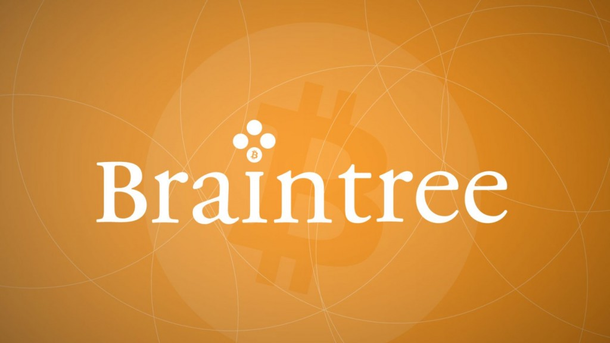

*The picks recommended by Cryptomen are representing opening orders, the suggested price to enter the market. In the future we will implement position (Sold, Holding). Those orders are based on TA’s, volume, fundamentals, and trading council sentiment about the popularity of the coins and the dev team¬†dedication.
Pick price: opening order
Current price: coinmarketcap.com average or exchange average.
Change: potential gain if you bought at the recommended price.
Most of you would not have heard of Braintree(well at least till today). Braintree is a company that helps online business process credit card payments. Well, how does such a company end up on our blog? Well, today Paypal, which acquired braintree around this time last year, released a video that gives us a glimpse of the future. It’s a bright future, especially because it is a future where Bitcoins are easily accessible and used by merchants all around the world and supported by money processing services like Paypal.
 More about Braintree: Braintree was founded in 2007 by Bryan Johnson, a serial entrepreneur. After very successful funding rounds in 2011, Braintree launched a slew of services that made transactions much easier. It acquired Venmo in 2012 for $26.2 million. This budding company had another round of funding in 2012. By September 2013, the company was processing $12 billion annually, with 4$ billion on mobile. Later that month, Paypal acquired Braintree for $800 million.
What this means to you and me: How many times have you knowingly or unknowingly used paypal last week? I am pretty sure you have used it more than once. Now imagine Bitcoins being used instead of dollar! Billions of everyday transaction with Bitcoins! That’s a not-so-distant dream. Also, the wide usage paypal and Braintree apis mean that Bitcoin will be everywhere. It will give a huge boost to the Bitcoin economy and make Bitcoin a prominent form of currency. It will also make tasks such as transferring money way easier. Also, for us traders, this means the value of Bitcoins will only rise!
Here’s the speech from the video:
“We Are The People,
who have built a whole new place to live, dream and be.
We employ ourselves, and vote with our money.
Our phone is our wallet.
We can spend Bitcoin with a tap, without a pocket
We can buy and sell and rent and send
And lend a twenty to a friend
from the coffee bar and share-car, We Are
unstoppable, with our thumbs.
Just One Touch to buy just about anything.
No need for filling billing info time-after-time
or remember password rhymes
to get that dress, a cabin, a concert ticket.
We live on all devices, and are as mobile as nature intended.
No need to send any details or data,
Not even when we pay each other.
We have magical money, not bound by bank or bill
It’s instant, simple, and secure enough,
to get out of the way.
Consider yourself invited to ‘The People Economy'”
NXTTY is an encrypted mobile messaging system accompanied by a namesake Nxttycoin built upon the NXT platform. While the coin has been available for a few weeks, the application is still in development.
I really like NXTTY, the idea to create a company and app¬†and relate it with a coin, it’s great!
My favorite digital currencies right now are the one creating new economies, real economies, not just exchanging one coin for another and speculating on the markets.
Innovations like Storjx and NXTTY are essential in the crypto world. If you create a coin and you¬†manage¬†a company.. selling a service or a product with your own digital currency, you totally understand what crypto–currencies are about. New economies to give real value to cryptos. Don’t wait for Google and Amazon to accept Bitcoin, make it happen.
NXXTY (the app), is supposed to be built by the users, owned by the users.
But, honestly, it is really hard to get answers to my questions when I speak with shareholders or the developers themselves.
They don’t seem to have a legal plan for their company. I’ll let you judge by yourself (see print-screens of the conversation below).
I studied business law and business administration. Legally, I do not understand how the shareholders are really owning shares of the company.
There are no agreements connecting the coin distribution with the development of the app.
I asked them simple questions, but they don’t seem to be prepared for success.
Here:
Q: The best thing an app creator can do with his company, is getting acquire by a monster like Facebook.¬†If Facebook wants to acquire NXTTY, ¬†just like they acquired Whatsapp for $19B, let’s say in the future they offer NXXTY 5M, what happens next?
NXTTY: 5 million / 1 billion coins = 0.005 per. coin, so if you hold 1 coin you would receive 0.005$.
Ok, the maths are good, but is that even legal?
Q: how would you transfer the money to investors, how would you track them all?
Q: Ok, we all know that by now, but can you tell more?
If a public company offers you 5M, you would need to create a real company to legally sell your app NXTTY. How will you build your shareholders convention? How would you contact them all with no contracts?  How would you transfer the USD$ to everyone, by Paypal?
NXTTY: Well the NXTTY community would decide what to do once voting is implemented from inside the Nxtty wallet. What & how to do it would be determined and decided by vote. One vote per coin.
I’m not sure Mark Zuckerberg will wait for your community vote and you would have time for that if you have a 5M offer on the table.
On NXTTY website they mention: 
”Yes, we do not need to nor do we intend to issue company shares in the tradition sense of the word. We know many are afraid of violating laws which govern the issuance of company shares. So by not issuing such securities we hope to keep ourselves on the right path.”
Legally, is that enough? Does it even makes sense? 
Also, If NXTTY make profits $USD with ads or other products/services with the app.. what happens with the money how would it be distributed to NXTTY coins holders?
They are announcing the launch of a revolutionary app with a lot of features, but if it becomes popular and big, what happen? To me they are not prepared for that.
Let’s be honest, I just want this to be the most transparent as possible. If a public company contact the devs and offer a big amount of money for NXTTY, they could simply sell it, totally separated/distinct from the “crypto-currencies” ¬†shareholders and run.
The only value remaining of NXTTY coin would be the NXTTY/BTC. There are absolutely no legal contracts relating the investors, the company, NXXTY developers and a potential acquisition of the company on the market.
I’m not saying that will happen, but I’m just asking questions to make this coin and project more valuable. Because it is a good idea.
To me:
“1. Is it the position of the company to never sell shares?
Yes, we do not need to nor do we intend to issue company shares in the tradition sense of the word.¬† We know many are afraid of violating laws which govern the issuance of company shares.¬† So by not issuing such securities we hope to keep ourselves on the right path.”
To me, that is not a complete answer but I will continue my research and look forward to reading Cryptomen reader’s comments on the matter.
Conversation with NXTTY Facebook page administrator: 
Very interesting coins have emerged in the market lately. Not by the technicalities and specs, but mostly by the integration of a business backed by that crypto-currency. I love the idea to create new economies behind cryptoz, it’s not only about creating a coin for fun and launching it on Coinmarketcap anymore. There is more to crypto-currencies, I love those businessmen, those start-ups who wants to create, not only a coin, but a whole business model behind that coin. A lot of potential in that new way to promote crypto-currencies to the mainstream.
I’m talking about coins like StorjcoinX SJCX, I love that idea of using a crypto coin in a already proven business model (cloud storage). It is here to stay, there are so many utilities to it, I can’t sleep! Seriously, the concept is awesome, StorjX (the coin) is the monetary system chosen to reward (remunerate) people who share Hard Drive space for their Cloud Network Storj “Storage”.
We’ll see more and more of that just like.. NXTTY! Those guys are¬†creating a messenger app similar to whatsapp, with other features like Voice and live news notifications. The idea of this to raise money (NXTTY) to develop a business like an iOS or android app.. is great! If they sell the app or create an ad system around the app with NXTTY coins, it might sky rocket. More details will be needed: if your buying the coins, will you own shares of the actual company if it goes public, or stay private. If anyone knows the answer, don’t hesitate to share your impression in the comments below.
Crypti, although there was a rough start, through no fault of their own (nxt got hijacked for 1.5 mil on Bter on XCR’s launch day), the developers have powered on and plowed through the obstacles they have faced. They now have a working wallet/forge available which is stable. A Windows one+click wallet release is imminent, blockchain explorers and more are also on the horizon. Keep any eye on this one as you can still find XCR under 20 sat’s right now on Cryptsy, Polo and Bter. They are still working hard on the development of their apps, a lot of uptrend potential, they released their roadmap.
Hope this is helping you making better trading decisions.
Invitation:¬†This sunday at 9PM I’ll be online to discuss those picks on our website chat, stay #turnt4cryptoz
Warning: file_get_contents(https://blockchain.info/q/addressbalance/13VxRGh6tmn7pSZoi16XXTWtjA1zT1YrNe): failed to open stream: HTTP request failed! HTTP/1.1 429 Too Many Requests
in /var/www/html/wp-content/themes/divi-child/functions.php on line 405
The Crypti team gave Cryptomen a sneak peak at their roadmap for Crypti:
We are now into the first week of post-launch activity and have a fully functional and stable wallet. While some work still needs to be done on minor bug fixes and a few tweaks here and there, we wanted to give the community a sneak peek into what the next 12 months of development will look like.
Here is the first rendition of the Crypti Development RoadMap!
Short Term Development (1-3 Months) • Working Block Explorer
• Native Windows Wallet (1-click installer)
• Custom Block Chains
• Re-brand, Web Design, & Marketing Materials
• Crypti Introduction Video
Intermediate Term Development (3-6 Months) • Mobile Client
• Online Marketplace Management
• Merchant Review System
• In-Wallet Escrow System
• App Store (Featuring developer Crypti apps)
• Payment Processing System
Long Term Development Goals (6-12 Months) • Affiliate & Referrals System
• Verified owners voting
• Profile based contact lists
• IPO Platform
• Mobile Forging
• USD / EUR Support in Block Chain
Keep in mind that this is by no means a final list and items will be added as we add them internally.
We owe Crypti investors and the dev team an apology. We actually finished the integration with the dev team about 10 days ago. After the NXT event happened, we focused all our energy on a new security system which makes not only the cold wallet but also the hot wallet very safe. In the past a few days, we have done a lot testing of Crypti wallet as an exchange with the dev team. I have to say the Crypti team is great! I have had a happen time working with them. Good luck to Crypti and all investors. We are doing our best to support it as an exchange!
Warning: file_get_contents(https://blockchain.info/q/addressbalance/13VxRGh6tmn7pSZoi16XXTWtjA1zT1YrNe): failed to open stream: HTTP request failed! HTTP/1.1 429 Too Many Requests
in /var/www/html/wp-content/themes/divi-child/functions.php on line 405
All of the launch features which we committed to are now complete, functional, and available for use by the community. The launch features are as follows:
Hybrid PoS:
Proof of Time (PoT)
Proof of Purchase (PoP)
Merchant proof of Identity (PoI)
High TPS (Transactions per Second) P2P communication
Forging & Transaction Fee Compensation
Web wallet
RESTful API
Merchant accounts
Blockchain size optimization
Fork recovery
Docker cross-platform image
Crypti is a new crypto-currency designed from the ground up to solve the biggest problem with other currencies – lack of purchase motivation. Crypti is being built from scratch. It will not rely on any other crypto-currency code.
Crypti uses a combination of proof-of-stake algorithms making it first of a kind.
Crypti is being developed in lightweight Node.JS, and can run on every device out there, including embedded nodes.
Guaranteed Features
Custom block-chains, allowing anyone to launch their own chain with custom rules: calculations, storage
Combination of 3 PoS algorithms:
Proof-of-Purchase (purchases done since the last won forged block)
Proof-of-Time (node running up-time)
Proof-of-Identity (merchant address real-life validation)
Ed25519 DSA for increased security.
1 minute block time, pending on the network activity and node uptimes.
PoS retargeting on every new block.
Password protected wallets that allow recovery from seeds.
RESTful API for easy and fast interaction with Crypti nodes.
Appstore inside wallet
Team
The team consists from experienced developers, designers and investors well versed in the crypto world.
Team members are:
Boris Povod (creator, nodejs developer).
A.M. investor.
syrenity (developer)
Mike Doty (engineer)
GreXX (creative design)
Crypti Foundation
In order to ensure the ongoing Crypti development, marketing and promotion, a Crypti Foundation will be established. The Foundation will consist from members of the launch team, and from the publicly elected community members.
The foundation will control the raised funds in a public BTC wallet for transparency, and issue spending reports on a monthly fashion. The foundation will also control the vested Crypti of the launch team, and distribute them over the vested schedule.
The BTC funds will be kept in multi-singature enabled wallet, with multiple private keys distributed among the foundation members, for an increased safety of the funds.
The foundation will be eligible to replace it’s members and Crypti employees, based on their performance and public voting.
A detailed Foundation charter will be published for the community review during the pre-sale period. Cryptomen got an exclusive announcement from the Crypti dev team:
“Following mainnet integration testing completion with Bter, the Crypti Fondation hereby announces the official Crypti mainnet launch today, August 21st, at 20:00 UTC.
An official post in the blog and forum with links to wallets will be published. We will also publish it here on Cryptomen Article
We would also like to say thank you. Thank you to the community members who stood by us through the many obstacles we faced in getting to where we are today. We know it wasn’t an easy road, but we made it. We wouldn’t be where we are without you.
Markets are completely crazy!!! I think this has been a hard week of trading for many people. We were lucky enough, our NXT were secured, we invested in Crypti who did really well in this small Altcoin crisis.
Too many altcoins? Is it possible that the winners takes all scenario occurs with Bitcoin and maybe 3-4 other coins bringing home the honors, volume and market cap?
I believe in the next 12 months, this might happen.
So you need to be aware and careful with the coins your purchasing.
The market is so crazy (in part with a devaluation of Bitcoin) this might be due to the IPOs, Ethereum and so many coins who raised high volume lately.
My recommendations for now is to be very careful with your risk management, do not trade more than 20% of your BTC.
It’s very hard to make picks in a bearish market, I will mainly use my intuition in this market (fundamentals, the coins I believe in) with a little bit of TA’s.


 Markets are completely crazy!!! I think this has been a hard week of trading for many people. We were lucky enough, our NXT were secured, we invested in Crypti who did really well in this small Altcoin crisis.
Markets are completely crazy!!! I think this has been a hard week of trading for many people. We were lucky enough, our NXT were secured, we invested in Crypti who did really well in this small Altcoin crisis.{kind=link}
{kind=link}
{kind=link}
{kind=link}